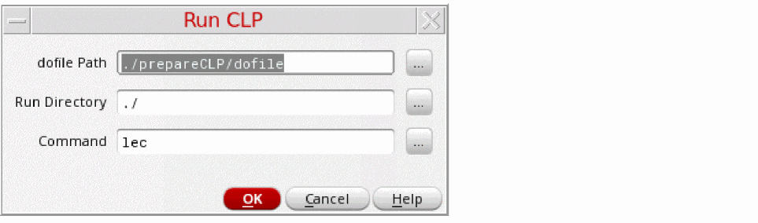
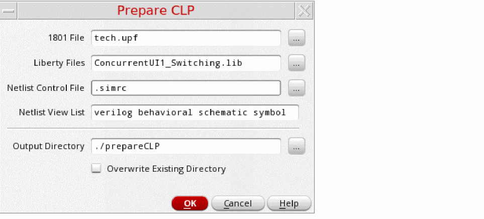
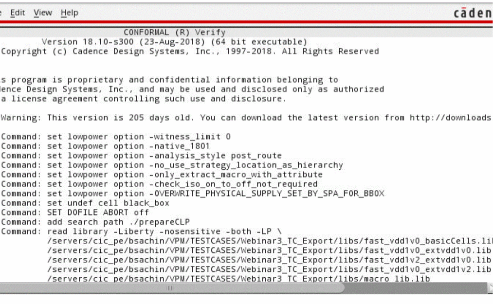

Preparing and Running CLP
Ensure that the following setup is done before you start verification using CLP:
- You have set the license for the Mixed-signal Option to Conformal Low Power (95127).
-
You have set the path to the binary file of CLP,
lec, in the UNIX path. - You have checked the design hierarchy and ensured that there are no errors in the design.
- You have checked the power intent of the design to ensure its completeness.
-
You have defined the reference Verilog and Liberty files by including
read librarystatements in the dofile (a file with set of commands required as inputs for power intent verification). This ensures that Conformal Low Power does not report the missing reference libraries. For more information on Conformal Low Power, refer to Conformal Low Power User Guide.
-
Click Power Manager – Run CLP if you already have the required dofiles.
 -
[Optional] Otherwise, before running the CLP, use the Prepare CLP form to generate the 1801 file, Verilog netlist, and CLP dofile at the specified path.
The 1801 File and Liberty Files field do not require explicit user inputs, if a setup template file already exists and is loaded for the cellview to extract and verify the power intent.The netlist generated by the Prepare CLP form is different from the general netlist created by NC-Verilog. This netlist includes a list of Verilog stub views for the macro models, single supply analog modules along with their power and ground pins, and the blocks that are binded to the existing power intent (1801). This makes the netlist more compatible with CLP. The log file generated, after the preparations for the CLP run are over, displays the results along with the following details: - Click Run CLP to start CLP and use the files created during CLP preparation, for power verification. The CLP run initiates when you click OK.
This two-step process, which includes preparing for CLP and running CLP, lets you check the input files and resolve issues, if any, before proceeding for the CLP run. Subsequently, you can run CLP from Power Manager by specifying a run directory and a CLP dofile. Alternatively, you can run CLP from the command line once the input files are generated using Power Manager.
After the verification is complete, the generated report is displayed in a separate log window as shown below.

Related Topics
Verifying Power Intent of a Design
Power Intent Verification Requirements
Return to top